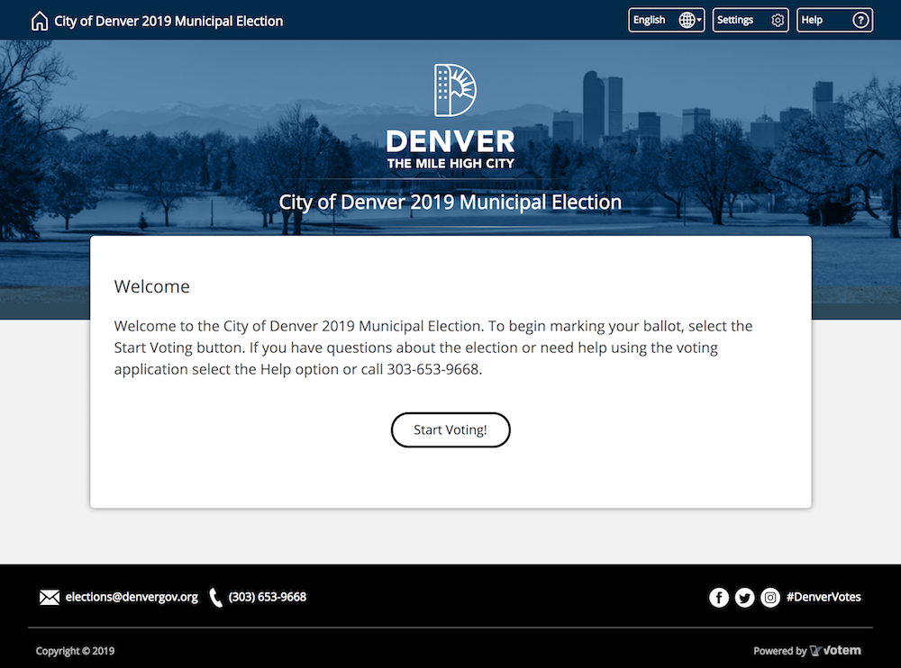
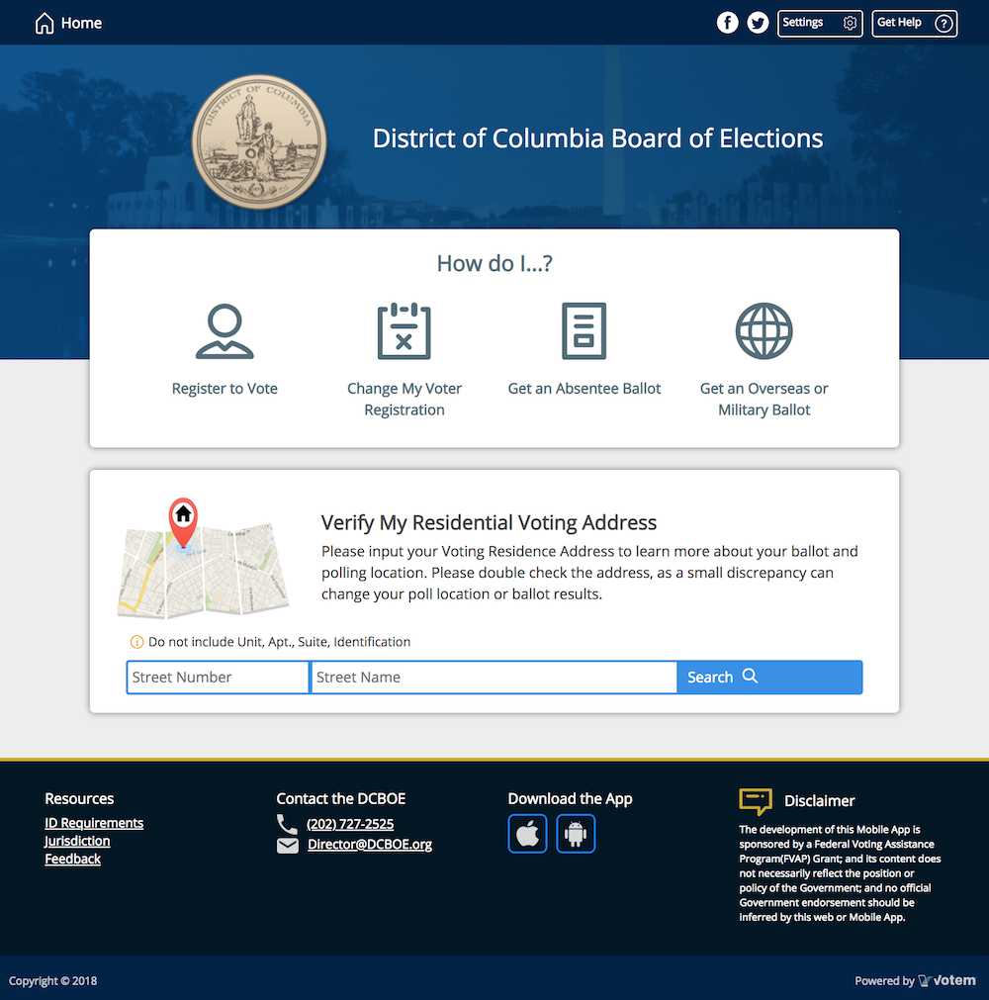
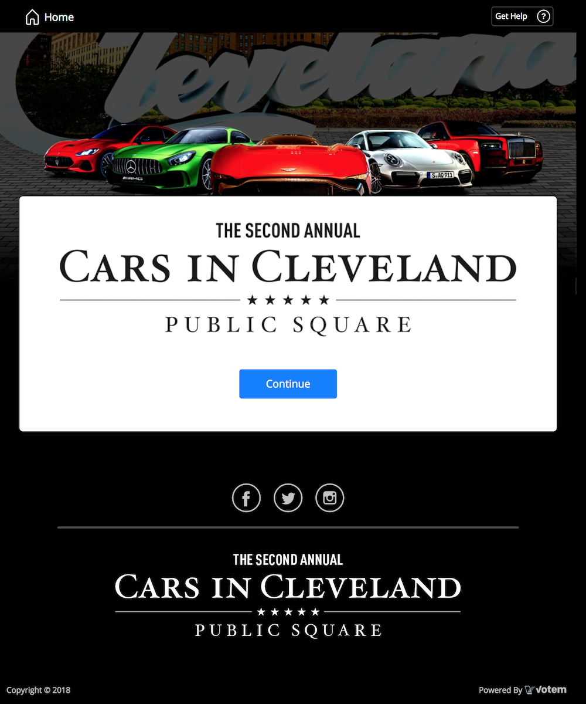
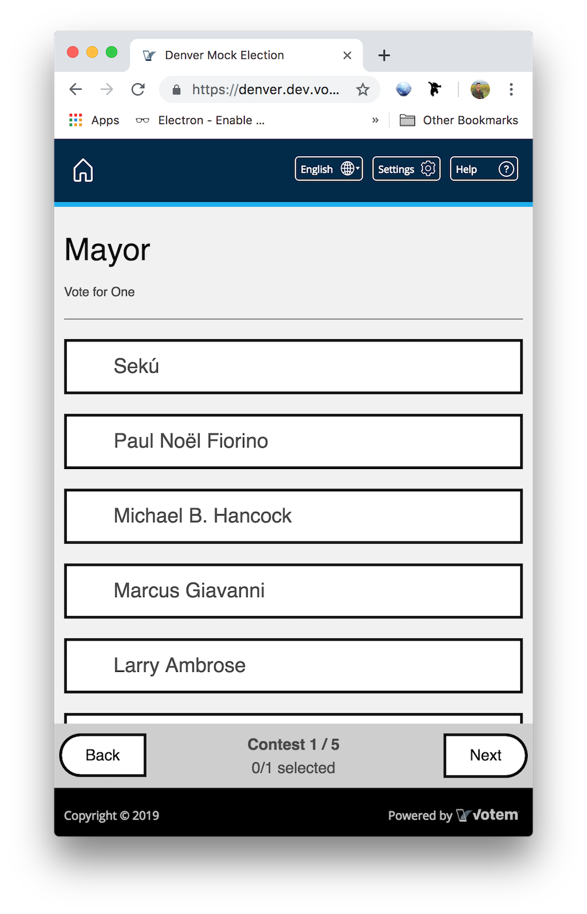
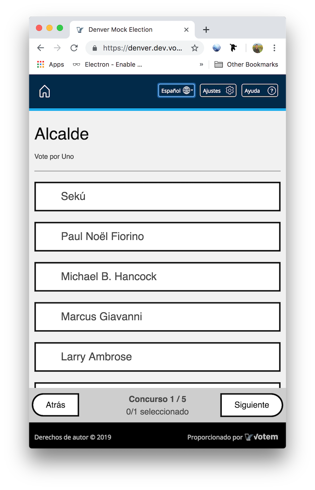
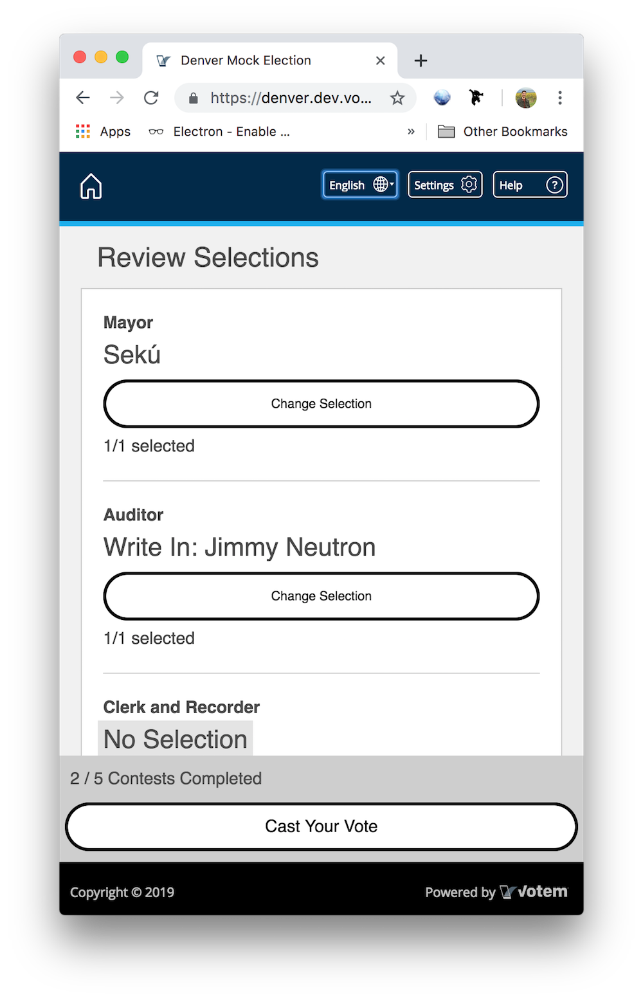

Work Sample: Voter Site Customization
Working with both government and private customers, we quickly realized each client had very specific needs regarding theming, how voters should "log in" to access their ballots, and custom functionality. Rather than fork our existing code-base for different clients, I devised a configurable template app that used a JSON config to express specific client needs, allowing non-engineers to set up a variety of different elections.
Example of Customizable UI + Feature From JSON Config



An example of a custom component injected at /maps (injection expressed through JSON).
Example of Customizable Voter Authentication Form from JSON
Form JSON could express conditional requirements such as either or (for SSN or DL).
Many customers required asynchronous lookups to be performed as a voter filled out their authentication. For example, if the voter had been found, their old address would have been autofilled on the next page of the form which they could have then completed and submitted. These asynchronous lookups and autofilling were expressable through the JSON form.

This election only needed an email to authorize to vote (a fan vote).
Form JSON could express signature field.
Example of Ballot Marking + Multiple Languages



